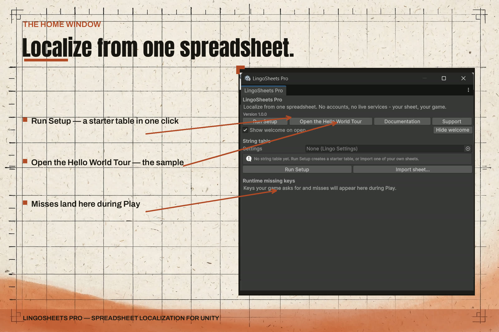
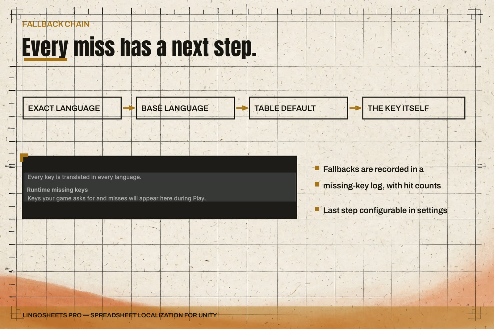
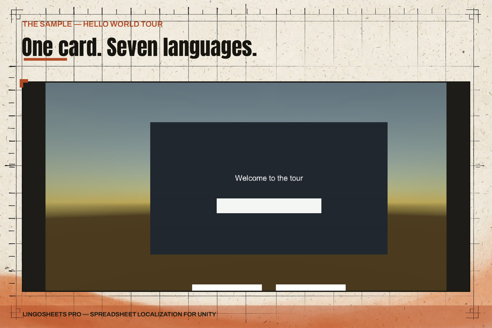

LingoSheets Pro — Overview
LingoSheets Pro localizes a Unity game from one spreadsheet. Your strings live in a sheet that you, your producers, and your translators can all edit. In the Editor you import that local file — CSV, TSV, or XLSX — and the import builds a string table asset. Your game then reads that table at runtime and switches languages through TextMeshPro and uGUI components.
Publisher: ByteLura.
Support: bytelura@gmail.com.

The design decision at the centre
There is no live dependency of any kind. No accounts, no tokens, no network calls, and no hosted service sit between your sheet and your game — in the runtime or in the Editor tools. Import is a deliberate action on a local file, and the player build ships a self-contained string table asset. A localization pipeline built this way has no external service that can stop working while nobody is watching.
How the pieces fit together
- The sheet is the source of truth. Strings enter through import and leave through export.
- The string table is the build artifact. It is a ScriptableObject asset that ships in your build.
- Binding components connect labels and language pickers to keys, so most UI text needs no switching code.
- A documented fallback chain decides what a player sees when a translation is missing, and every fallback is recorded in a missing-key log.
- A missing-translation report names every untranslated key per language, and an untranslated-only export gives translators a sheet containing exactly the gaps.
- Pseudo-localization lengthens and marks every string on demand, so layout problems surface before real translations arrive.
- Right-to-left handling covers detection, direction and alignment handling, and a compact Arabic shaper for single-line UI text, scoped honestly on the RTL and Arabic Shaping page and the Honest Limits page.
What is in the package
- Runtime components and the lookup facade your game code calls.
- An Editor home window at Tools > ByteLura > LingoSheets Pro with one-click setup, import and export actions, the missing-translation view, and a Verify Install check.
- A starter table (6 keys in English, Spanish, German, and French) created by setup.
- The Hello World Tour sample: one greeting card in seven languages, with its own spreadsheet you can edit and re-import.
- Documentation: this set expands the four pages shipped inside the package (Quick Start, Sheet Format, API Reference, and the honest-limits page).
Honest scope
The Arabic shaper is a compact presentation-form shaper scoped to single-line UI text. It is not a full UAX#9 bidirectional implementation, and its claim extends as far as the shipped sample demonstrates, and no further. Long, multi-paragraph, mixed-direction documents are the platform text stack's job. The full list of what v1 does not do is on the Honest Limits page.
Requirements
- Unity 2022.3 LTS or Unity 6.
- Package dependencies: uGUI and TextMeshPro. Nothing else is declared.
Product gallery




Where to go next
- New to the product: Quick Start.
- Preparing a sheet: Sheet Format.
- Honest limits before you buy into the workflow: Honest Limits.